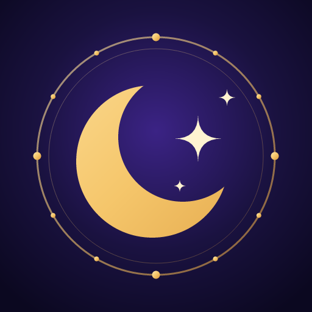

BurçlandınUygulamayla ilgili soru, öneri ve hata bildirimleri için buradayız.
Bir hata bildiriyorsan telefon modelini ve sorunun nasıl oluştuğunu yazman çözmemizi hızlandırır. Genellikle birkaç gün içinde yanıt veririz.
Evet. Doğum saatini boş bırakabilirsin; Güneş ve gezegen yorumların yine çalışır, yalnızca yükselen burç ve evler gösterilmez. Saatini sonradan Profil'den ekleyebilirsin.
Gezegenlerin konumları açık kaynaklı astronomy-engine kütüphanesiyle telefonunda hesaplanır. Günlük puanlar, o günün gezegenlerinin senin doğum haritana yaptığı açılara göre belirlenir ve her yorumun gerekçesi yazar.
Hayır. Tüm hesaplamalar cihazında yapılır; uygulama internetsiz de tam çalışır.
Yalnızca telefonunda. Hesap ve sunucu yoktur. Profil ve ayarlar ekranındaki “Tüm verilerimi sıfırla” ile hepsini silebilirsin; uygulamayı kaldırınca da silinir. Ayrıntılar: Gizlilik Politikası.
Burçlandın ücretsizdir ve reklamlarla desteklenir. İlk açtığın gün reklam görmezsin. Bazı ayrıntılı yorumlar kısa bir reklam izleyince gün boyunca açılır. Reklamları Google AdMob gösterir; adın, doğum bilgilerin ve kayıtların reklam hizmetine gönderilmez. Avrupa’daysan reklam onayını Profil ve ayarlar → “Reklam gizlilik tercihleri” düğmesiyle değiştirebilirsin.
Önce uygulamada sağ üstteki avatarına dokun ve Profil ve ayarlar ekranında bildirimlerin açık olduğunu kontrol et. Sonra telefonun Ayarlar → Bildirimler bölümünde Burçlandın'a izin verildiğinden emin ol. Pil tasarrufu modu bazı telefonlarda bildirimleri geciktirebilir.
Ana ekranda boş bir yere basılı tut, “Widget” ya da “Bileşenler”i seç ve listeden Burçlandın'ı ekle. Bileşen, uygulamayı açtığında güncellenir.
Uygulamada Profil → Hakkında → Hata kayıtları bölümünden raporu e-postayla gönderebilir ya da yukarıdaki adrese yazabilirsin.